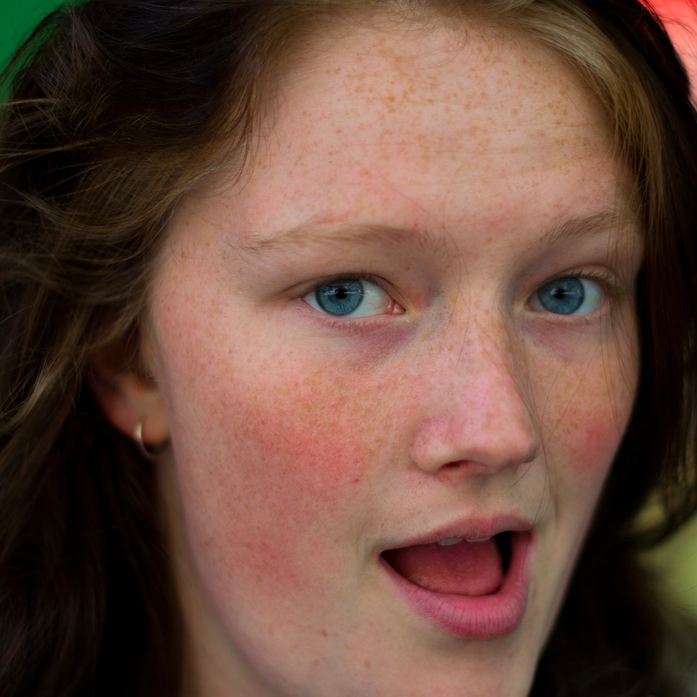

Bethany Crane
Who Is This Beth Person?

Hi there. My name's Beth and I'm currently a first year Computer Science/Arts student at the University of New South Wales.
I'm currently interested in computational linguistics and artificial intelligence. I must admit to not having done much work on either, but I'm hoping to alleviate this a little with Stanford's online AI course this year.
Why Should You Be Interested?
 I'm currently learning about Data Structures in C, as well as the uses of language and the history of English. Oh, and some microeconomics. But that's just the uni work. In my spare time I'm studying, reading, blogging, photographing, coding, leading and doing odd bits of work.
I'm currently learning about Data Structures in C, as well as the uses of language and the history of English. Oh, and some microeconomics. But that's just the uni work. In my spare time I'm studying, reading, blogging, photographing, coding, leading and doing odd bits of work.
Where do you come in? Well that's up to you; beth@brolgaswan.com
What I've Been Up To Lately
HOW I'VE SPENT 2011
 Being a CSE Student Representative
Being a CSE Student Representative
Working on the OpenLearning design and ideas teams
Tutoring High School students in Uni courses
Volunteering within CSE
Performing in CSE Revue
Creating an unofficial CSE Running Club
Working on the VC's Scholarship Campaigns
Plans for 2012
HOW I INTEND TO BOSS NEXT YEAR
 Be both an Arts and a CSE Mentor
Be both an Arts and a CSE Mentor
Play a sport like
Tutor more university courses
Perform in CSE Revue, and be involved in Med Revue
Be Secretary for CSEsoc
Do Summer of Research at NiCTA
Join the Debating Society